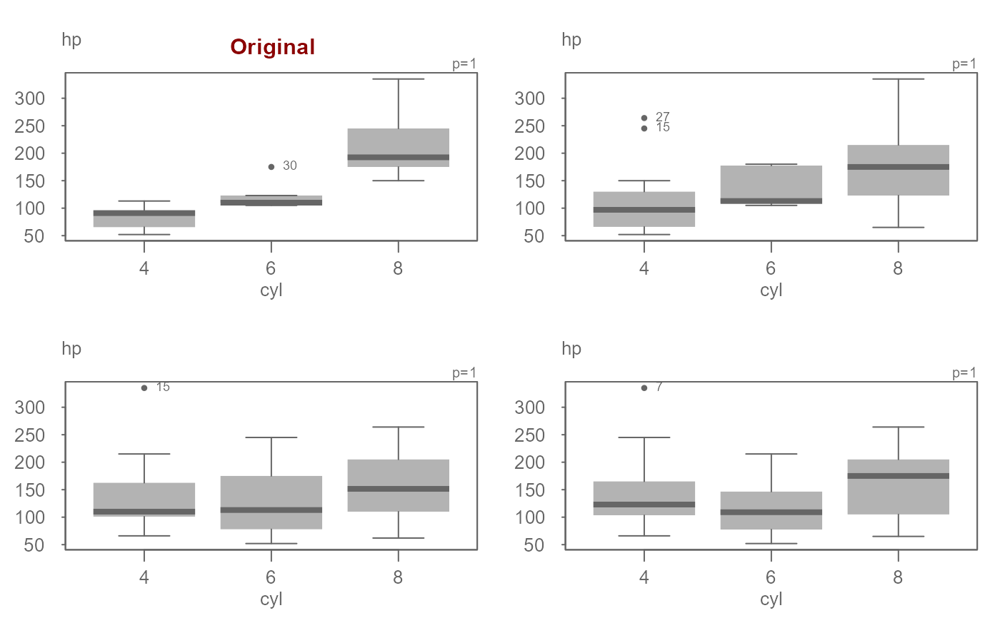
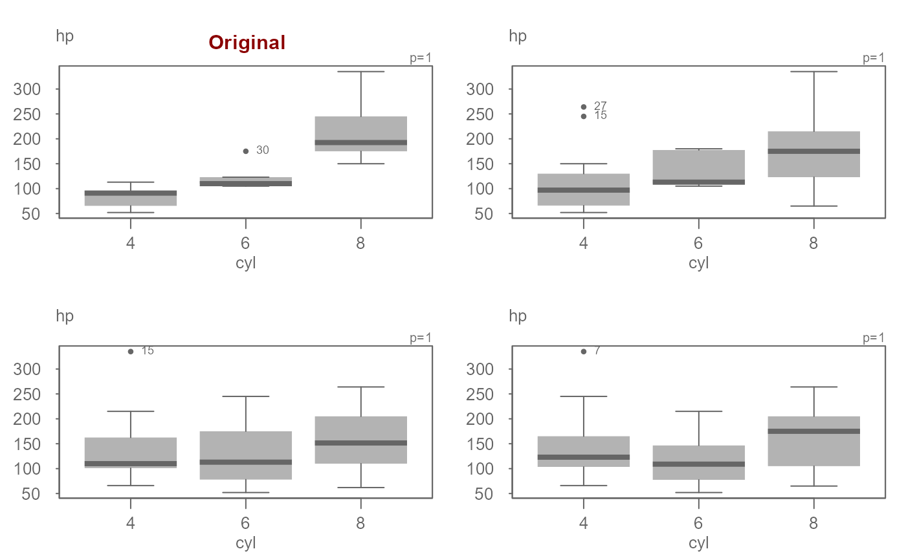

This function shuffles the values in a specified column of a data frame across all groups.
Arguments
- df
A data frame.
- x
The name of the column containing the values to be shuffled.
- grp
The name of the column containing the grouping factor.
- replace_x
A logical value indicating whether to sample values with replacement (default: FALSE).
- replace_grp
A logical value indicating whether to preserve the factor levels of the grouping column (default: TRUE).
- ...
Not used
Value
A data frame with the shuffled values and the original group assignments. The column names of the output data frame will match the input column names.
Details
Shuffling/permuting values across groups has, for effect, sampling from a same
distribution within each group level. This simulates a process where differences
between group levels are solely a function of random noise.
By default, the group distribution does not change. If you wish to allow the
group distribution to change (i.e. having a different number of group levels),
set replace_grp = TRUE. But, note that for small datasets, this may
result in empty group levels.
Examples
# Original data
eda_boxls(mtcars, hp, cyl, reorder = FALSE)
 # Permute values across cyl groups
df1 <- eda_shuffle(mtcars, hp, cyl)
eda_boxls(df1, hp, cyl)
# Is the variability explained by cyl due to chance alone or is it
# systematic?
OP <- par(mfrow = c(2,2))
eda_boxls(mtcars, hp, cyl, reorder = FALSE)
title("Original", col.main = "darkred")
eda_boxls(eda_shuffle(mtcars, hp, cyl), hp, cyl, reorder = FALSE)
eda_boxls(eda_shuffle(mtcars, hp, cyl), hp, cyl, reorder = FALSE)
eda_boxls(eda_shuffle(mtcars, hp, cyl), hp, cyl, reorder = FALSE)

par(OP)
# Permute values across cyl groups
df1 <- eda_shuffle(mtcars, hp, cyl)
eda_boxls(df1, hp, cyl)
# Is the variability explained by cyl due to chance alone or is it
# systematic?
OP <- par(mfrow = c(2,2))
eda_boxls(mtcars, hp, cyl, reorder = FALSE)
title("Original", col.main = "darkred")
eda_boxls(eda_shuffle(mtcars, hp, cyl), hp, cyl, reorder = FALSE)
eda_boxls(eda_shuffle(mtcars, hp, cyl), hp, cyl, reorder = FALSE)
eda_boxls(eda_shuffle(mtcars, hp, cyl), hp, cyl, reorder = FALSE)

par(OP)